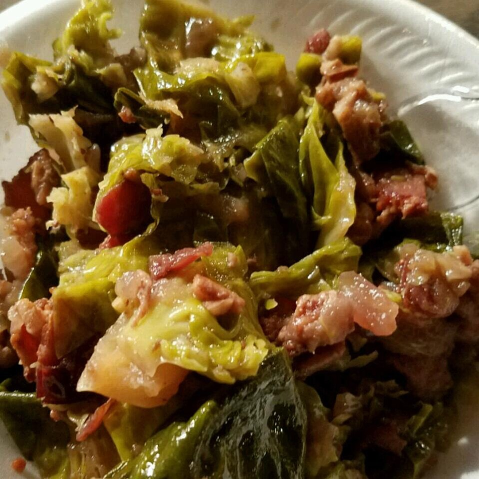

Home
Christine's Bacon and Brussels Sprout Cranberry Salad

Description
Wonderful quick and healthy warm salad that can be prepared in advance.
- ½ pound thick-cut bacon, cut into 1-inch chunks
- 1 pound Brussels sprouts, cut into 1/4-inch slices
- ½ cup dried cranberries
- ½ gala apple, diced
- ¼ cup water
- ¼ cup chopped, unsalted, and roasted almonds
- ¼ teaspoon ground black pepper
- ¼ cup balsamic vinaigrette dressing, or to taste
Directions
- Place bacon in a wok or large skillet; cook and stir until evenly browned, about 10 minutes. Drain excess fat.
- Mix Brussels sprouts, cranberries, apple, water, and almonds into bacon; cook and stir over medium-high heat until Brussels sprouts are bright green and tender, 7 to 10 minutes. Transfer sprouts mixture to a bowl and top with dressing.